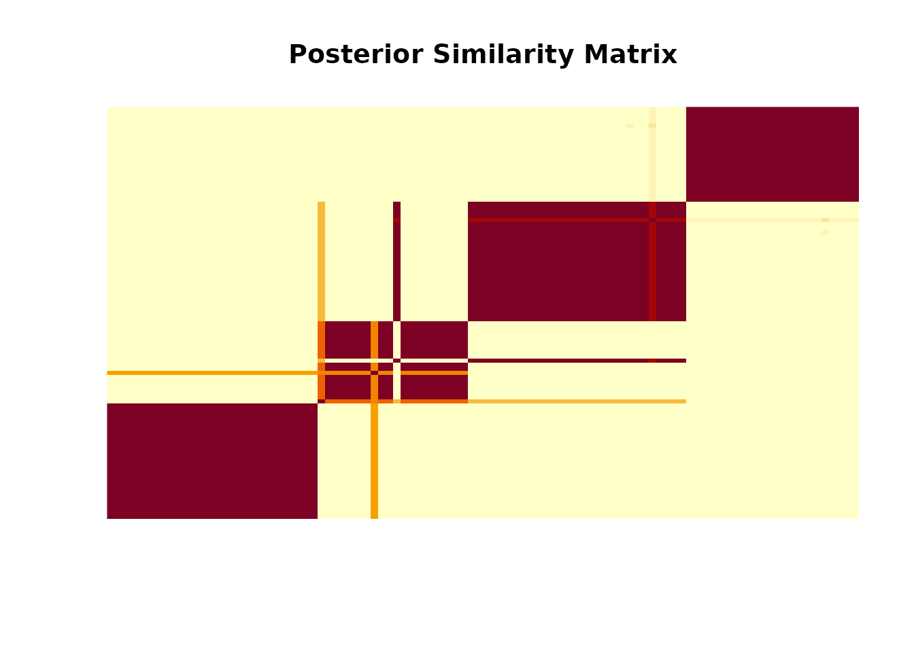

Getting started with BTSBM
BTSBM authors
2025-09-16
Source:vignettes/getting-started.Rmd
getting-started.RmdOverview
This vignette replicates the spirit of a larger simulation pipeline, but focuses on a single value of K and a single dataset to keep things simple and fast
-simulate a sparse paired-comparison topology,
-simulate latent blocks and block rates,
-generate win counts
-run the clustered Gibbs sampler (gibbs_bt_sbm),
-relabel and summarize (inference_helper),
-compare the inferred partition to truth via VI distance.
Helpers
# Random sparse match topology via Poisson counts on each unordered pair
sample_Nij <- function(n_players, lambda = 3) {
pairs <- utils::combn(n_players, 2)
N_out <- matrix(0L, n_players, n_players)
for (k in seq_len(ncol(pairs))) {
i <- pairs[1, k]; j <- pairs[2, k]
n_ij <- rpois(1, lambda)
N_out[i, j] <- N_out[j, i] <- n_ij
}
diag(N_out) <- 0L
N_out
}
# Map block rates to pairwise BT probabilities
from_lambda_to_theta <- function(lambda) {
# Calculate theta
theta <- exp(lambda) / (matrix(exp(lambda), length(lambda), length(lambda), byrow = TRUE) + exp(lambda))
# Replace -Inf values in theta with a very small number
theta[is.infinite(theta) & theta < 0] <- .Machine$double.xmin # Replace with the smallest positive number
return(theta)
}- Simulate one dataset (single K)
K <- 4 # single K for this vignette
n <- 100 # number of players/items
N_ij = matrix(0, n, n)
for(i in 1:(n-1)){
for(j in (i+1):n){
N_ij[i,j] = rpois(1,3)
}
}
N_ij[lower.tri(N_ij)] = t(N_ij)[lower.tri(N_ij)]
# ---------------------------
# 2) Assign each node to one of K clusters
# (z_star[i] in {1,...,K})
# ---------------------------
x_star = sample(1:K, n, replace = TRUE)
lambda_star = seq(0.1,2, length.out=K)
theta_star = from_lambda_to_theta(lambda_star)
# ---------------------------
# 3) Generate adjacency Y_ij
# using your binomial logic
# ---------------------------
w_ij = matrix(0, n, n)
for (i in 1:(n-1)) {
for (j in (i+1):n) {
if(N_ij[i,j]!=0){
for(k in 1:N_ij[i,j]){
w_ij[i,j] = w_ij[i,j] + rbinom(1, 1, theta_star[x_star[i],x_star[j]])
}
}
}
}
# Mirror for lower triangle
w_ij[lower.tri(w_ij)] = N_ij[lower.tri(N_ij)] - t(w_ij)[lower.tri(w_ij)]- Run the clustered Gibbs sampler (short chain)
out <- gibbs_bt_sbm(
w_ij = w_ij,
n_ij = N_ij,
a = 0.01, b = 1,
prior = "GN", # "DP", "PY", "DM", or "GN"
gamma_GN = 0.8,
n_iter = 1000, burnin = 300,
verbose = T
)
#> Iteration: 200 - #occupied = 6
#> Iteration: 400 - #occupied = 4
#> Iteration: 600 - #occupied = 4
#> Iteration: 800 - #occupied = 4
#> Iteration: 1000 - #occupied = 4- Relabel and summarize
post <- inference_helper(out$x_samples, out$lambda_samples)
# Average number of clusters, and distribution over #clusters
post$avg_n_clusters
#> [1] 4.02Posterior similarity matrix (PSM):
psm <- post$co_clustering
o <- order(x_star, decreasing = T) # or TRUE if you prefer
image(psm[o, o], main = "Posterior Similarity Matrix", axes = FALSE)
- Compare partitions to truth (VI distance)
We compute VI distances for the minVI and Binder partitions against the true labels z_star.